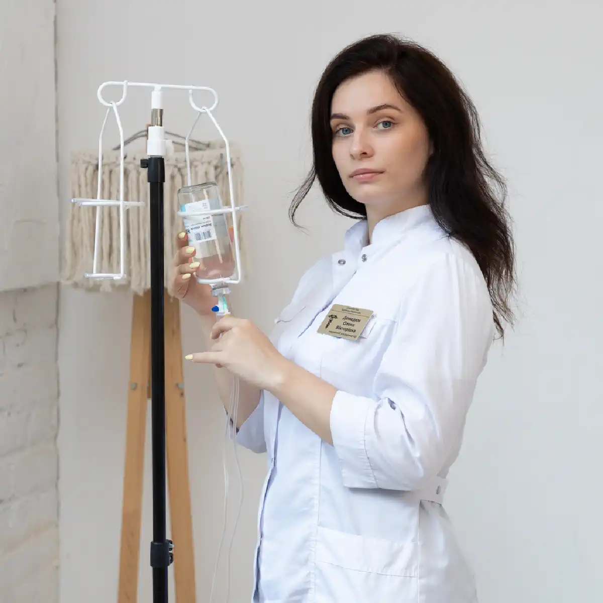

+38(068)
79 72 782
+38(068)
79 72 782Капельница от бупренорфина в Харькове
Помощь при любой абстиненции


Бесплатная консультация, работаем круглосуточно 24/7
Помощь при любой абстиненции

Дата написания: 22 сент. 2026 г.
Последнее обновление: 22 окт. 2026 г.
Бупренорфин относится к опиоидам и используется в медицинской практике, в том числе для лечения опиоидной зависимости. Однако немедицинское употребление, самостоятельное увеличение дозы, сочетание с алкоголем, бензодиазепинами или другими веществами, угнетающими центральную нервную систему, может привести к выраженной сонливости, нарушению сознания и угнетению дыхания. При проблемном употреблении может потребоваться лечение наркотической зависимости. Капельница после бупренорфина может применяться только по медицинским показаниям. Она не является антидотом и не способна мгновенно «вывести» препарат из организма. При подозрении на передозировку основное значение имеют оценка дыхания, экстренная медицинская помощь и применение налоксона по показаниям.
Капельница от наркотиков в Харькове после употребления бупренорфина может назначаться только после осмотра пациента и оценки его состояния. Врач уточняет дозу и время употребления препарата, наличие других опиоидов, алкоголя, бензодиазепинов и сопутствующих заболеваний. Инфузионная терапия может использоваться для коррекции обезвоживания, нарушений водно-электролитного баланса или введения назначенных симптоматических препаратов. Состав и объём терапии определяются индивидуально. Если у человека нарушено сознание или дыхание, домашняя капельница не является подходящим вариантом лечения — необходима экстренная наркологическая помощь.
Обратиться за медицинской помощью следует при выраженной сонливости, необычной заторможенности, спутанности сознания, слабости, головокружении, тошноте или ухудшении общего состояния после употребления бупренорфина. Особого внимания требуют ситуации, когда препарат принимался в неизвестной дозе, использовался не по назначению врача или сочетался с алкоголем, бензодиазепинами, другими опиоидами или седативными веществами. Если человека трудно разбудить, дыхание становится редким, поверхностным или затруднённым, необходима экстренная помощь. При стабильном состоянии может потребоваться консультация нарколога.
После употребления бупренорфина могут наблюдаться сонливость, головокружение, слабость, тошнота, повышенная потливость и снижение концентрации внимания. При выраженной интоксикации возможно угнетение сознания и дыхания. Риск тяжёлых осложнений возрастает при сочетании бупренорфина с другими веществами, оказывающими угнетающее действие на центральную нервную систему. Поэтому перед проведением капельницы для детоксикации необходимо оценить не только жалобы пациента, но и дыхание, уровень сознания, пульс, давление и насыщение крови кислородом.
Капельница назначается не автоматически после факта употребления препарата, а при наличии конкретных медицинских показаний. Инфузионная терапия может рассматриваться при обезвоживании, нарушениях водного баланса, некоторых проявлениях абстинентного синдрома или необходимости внутривенного введения назначенных врачом препаратов. Если состояние пациента стабильное и показаний для инфузии нет, установка капельницы может не потребоваться. Решение о необходимости детоксикации от наркотиков принимает врач после осмотра.
Нарколог на дом в Харькове может оценить общее состояние пациента, уровень сознания, дыхание, пульс и артериальное давление, выяснить обстоятельства употребления и определить дальнейшую тактику. Особенно важно сообщить врачу, употреблялись ли одновременно алкоголь, бензодиазепины, метадон, фентанил или другие опиоиды. По результатам осмотра может быть рекомендовано наблюдение дома, симптоматическое лечение, детоксикация от наркотиков или госпитализация. При признаках передозировки плановый выезд нарколога не должен задерживать вызов 103 или 112.
В стабильном состоянии и после медицинской оценки капельница от наркотиков на дому в отдельных случаях может проводиться по показаниям. Домашний формат допустим только тогда, когда человек находится в сознании, нормально дышит и врач не выявляет признаков тяжёлой интоксикации или других состояний, требующих стационарного наблюдения. Если пациента трудно разбудить, появились судороги, выраженная спутанность сознания или нарушение дыхания, требуется экстренная помощь, а не обычная капельница на дому.
Универсального состава «капельницы от бупренорфина» не существует. Лечение определяется выявленными нарушениями. По показаниям могут применяться инфузионные растворы для коррекции дефицита жидкости и электролитных нарушений, а также лекарственные средства для симптоматической терапии. Назначение препаратов зависит от давления, пульса, состояния сердечно-сосудистой системы, функции других органов и сопутствующих заболеваний. Самостоятельно подбирать состав капельницы от наркотиков после употребления опиоидов опасно.
Детоксикация от наркотиков после бупренорфина направлена на безопасную стабилизацию состояния и коррекцию возникающих нарушений, а не на мгновенное удаление всего препарата из организма. Перед началом терапии необходимо отличить относительно стабильное состояние от передозировки. При угнетении дыхания первоочередной задачей становится поддержание жизненно важных функций. Если бупренорфин употреблялся регулярно и сформировалась зависимость, детоксикация рассматривается только как один из этапов дальнейшего лечения наркомании.
Лёгкая сонливость и выраженное угнетение сознания — не одно и то же. Если человек отвечает на вопросы, нормально дышит и состояние не ухудшается, врач оценивает необходимость дальнейшего наблюдения и терапии. Если человека сложно разбудить, он перестаёт нормально реагировать или дыхание становится редким и поверхностным, необходимо предполагать тяжёлую опиоидную интоксикацию. Такому пациенту нельзя давать пищу, таблетки или большое количество воды через рот при нарушенном сознании. Необходима помощь при наркотической интоксикации.
Наиболее опасным осложнением опиоидной интоксикации является угнетение дыхания. При тяжёлом состоянии человек начинает дышать редко и поверхностно, что приводит к недостаточному поступлению кислорода. Риск возрастает при неправильном употреблении бупренорфина или сочетании с бензодиазепинами, алкоголем и другими депрессантами центральной нервной системы. При нарушении дыхания нельзя ждать действия капельницы. Необходимы немедленная экстренная помощь и лечение опиоидной передозировки.
При передозировке возможны выраженная сонливость, резкое снижение реакции на окружающих, потеря сознания и угнетение дыхания. В такой ситуации капельница при наркотической интоксикации не решает главную проблему. Приоритетом является восстановление адекватного дыхания и применение средств для лечения опиоидной передозировки. Если человека невозможно разбудить или он плохо дышит, необходимо немедленно вызвать 103 или 112. После стабилизации может потребоваться наркологический стационар.
Налоксон применяется для экстренного устранения опасного действия опиоидов при передозировке. Он может использоваться и при передозировке бупренорфином. Из-за особенностей действия бупренорфина может потребоваться дальнейшее медицинское лечение, наблюдение и поддержка дыхания. Даже если после налоксона человек пришёл в сознание и стал лучше дышать, медицинская оценка всё равно необходима. При необходимости пациент направляется в наркологический стационар.
Сочетание бупренорфина с алкоголем способно усиливать угнетающее действие на центральную нервную систему. Это увеличивает риск глубокой сонливости, нарушения сознания и угнетения дыхания. Если после такого сочетания человек стал необычно сонливым, с трудом просыпается или дышит редко и поверхностно, необходима срочная медицинская помощь. Если одновременно присутствует длительное употребление алкоголя, после стабилизации состояния может дополнительно рассматриваться вывод из запоя на дому в Харькове или дальнейшее лечение алкоголизма.
Совместное применение опиоидов и бензодиазепинов связано с повышенным риском выраженной седации и тяжёлого угнетения дыхания. При этом пациентам, которые получают бупренорфин по назначению врача для лечения опиоидной зависимости, не следует самостоятельно прекращать терапию. Лекарственную схему должен корректировать специалист. При сонливости с нарушением дыхания требуется срочная наркологическая помощь или вызов экстренной медицинской службы.
После длительного приёма резкая отмена бупренорфина может сопровождаться опиоидным абстинентным синдромом. Возможны тревога, беспокойство, нарушения сна, боли в мышцах, потливость, озноб, желудочно-кишечные симптомы и выраженная тяга к опиоидам. Капельница при абстинентном синдроме может использоваться по показаниям для коррекции обезвоживания и отдельных симптомов, однако она не устраняет все механизмы отмены и не заменяет полноценное лечение.
Полностью снять ломку одной капельницей удаётся не всегда. Выраженность абстинентного синдрома зависит от продолжительности употребления, дозы препарата и состояния организма. Инфузионная терапия может облегчить некоторые проявления, связанные с обезвоживанием или сопутствующими нарушениями, но дальнейшая тактика определяется врачом. Лечение ломки от бупренорфина должно проводиться после медицинской оценки, особенно если препарат использовался длительное время.
Стационарное лечение может потребоваться при тяжёлом общем состоянии, выраженной абстиненции, сочетанном употреблении нескольких психоактивных веществ или наличии заболеваний, требующих постоянного наблюдения. Дополнительными основаниями для госпитализации являются нарушение сознания, дыхания, выраженная нестабильность артериального давления и другие опасные симптомы. В таких случаях лечение в наркологическом стационаре позволяет контролировать состояние пациента и своевременно корректировать терапию.
Продолжительность инфузионной терапии определяется объёмом назначенных растворов, состоянием пациента и задачами лечения. Универсальной продолжительности капельницы для детоксикации не существует. В некоторых случаях одной инфузии достаточно для коррекции конкретного нарушения, в других пациенту требуется дальнейшее наблюдение или комплексное лечение. Продолжительность процедуры и необходимость повторной терапии определяются врачом после осмотра.
Время улучшения зависит от причины плохого самочувствия. Если симптомы связаны с обезвоживанием или отдельными метаболическими нарушениями, состояние может улучшаться по мере их коррекции. При опиоидной абстиненции симптомы могут сохраняться дольше, поэтому одна процедура не гарантирует полного исчезновения ломки. Если самочувствие не улучшается или появляются новые симптомы, необходима повторная консультация нарколога.
Инфузионная терапия воздействует на отдельные физические проявления состояния пациента, но не устраняет причины зависимого поведения, тягу к веществу и риск повторного употребления. Если человек теряет контроль над приёмом препарата, использует его не по назначению или продолжает употреблять несмотря на последствия, требуется комплексное лечение наркотической зависимости. Такое лечение может включать медицинское наблюдение, коррекцию медикаментозной терапии, психотерапию при наркотической зависимости и дальнейшую реабилитацию.
После стабилизации состояния врач оценивает характер употребления препарата и определяет дальнейшую терапию. Важно учитывать, что бупренорфин сам является одним из препаратов для лечения опиоидной зависимости. Поэтому продолжительный приём назначенного врачом препарата не означает, что пациенту обязательно необходимо полностью от него отказаться. Если проблема заключается в немедицинском употреблении или потере контроля, составляется индивидуальный план лечения зависимости от бупренорфина, а при необходимости подключается реабилитация наркозависимых.
Анонимная наркологическая помощь в Харькове позволяет получить медицинскую оценку после употребления бупренорфина, обсудить симптомы отмены или проблемное употребление препарата. Для безопасного выбора лечения врачу важно сообщить реальную дозу, приблизительное время последнего употребления и информацию о других веществах, которые принимались одновременно. После осмотра определяется подходящий формат помощи — амбулаторное наблюдение, домашнее лечение при стабильном состоянии или наркологический стационар.
Стоимость капельницы от бупренорфина в Харькове начинается от 2499 грн.
Срочный вызов нарколога в Харькове может потребоваться при развитии абстинентного синдрома, ухудшении самочувствия после употребления или необходимости оценить возможность лечения на дому. До приезда врача следует контролировать состояние сознания и дыхание пациента. Если человека невозможно разбудить, он перестаёт нормально дышать или состояние быстро ухудшается, ждать планового приезда нарколога нельзя — необходимо немедленно вызвать 103 или 112.
Круглосуточная наркологическая помощь в Харькове может понадобиться при ухудшении состояния после употребления бупренорфина, развитии абстиненции или необходимости срочной медицинской оценки. При стабильном состоянии врач может подобрать симптоматическую терапию, определить показания к инфузионному лечению и составить дальнейший план лечения наркотической зависимости. При потере сознания, выраженном угнетении дыхания или подозрении на передозировку капельница не должна задерживать экстренную помощь, применение налоксона по показаниям и госпитализацию.
Телефон для консультации и вызова нарколога на дом в Харькове: +38(050-021-69-57)

Статья проверена экспертом
Робулец Ольга
Врач нарколог, ординатор
Возможно интересная статья:
Социофобия — что нужно знать

Лечение наркотической зависимости начинается с консультации и оценки состояния пациента. Врач уточняет, какие вещества употреблялись, как долго и в каких количествах, когда был последний приём, есть ли симптомы абстиненции, хронические заболевания и предыдущие попытки лечения. При интоксикации или выраженном синдроме отмены первым этапом может стать медицинская детоксикация и стабилизация состояния. После этого составляется дальнейший план лечения зависимости.
В некоторых случаях медицинскую помощь можно оказать на дому, однако это зависит от вида употреблённого вещества, выраженности интоксикации или абстиненции и общего состояния пациента. Перед началом лечения нарколог оценивает сознание, дыхание, давление, пульс и возможные осложнения. При тяжёлом состоянии или высоком риске осложнений требуется лечение в стационаре.
Стационар необходим, если состояние пациента невозможно безопасно контролировать дома. Показаниями могут быть нарушение сознания, угнетение дыхания, судороги, выраженное возбуждение или психоз, тяжёлое обезвоживание, серьёзные сердечно-сосудистые нарушения, сочетанное употребление нескольких веществ или тяжёлые сопутствующие заболевания. Некоторые виды синдрома отмены также требуют медицинского наблюдения и специализированного лечения.
Программа детоксикации подбирается индивидуально и зависит прежде всего от вещества и состояния пациента. Она может включать медицинское наблюдение, коррекцию обезвоживания и электролитных нарушений, симптоматическую терапию и препараты для уменьшения проявлений синдрома отмены. Для некоторых видов зависимости существуют специальные лекарственные методы лечения. Детоксикация помогает пройти острый период, но сама по себе не устраняет наркотическую зависимость.
Продолжительность детоксикации индивидуальна. Она зависит от употребляемого вещества, длительности и частоты употребления, дозировки, сочетания нескольких веществ и состояния организма. У одних пациентов наиболее выраженные симптомы проходят за несколько дней, у других медицинское наблюдение и лечение требуется дольше. Точные сроки можно определить только после оценки состояния пациента.
При некоторых вариантах лёгкого или умеренного синдрома отмены лечение возможно амбулаторно или на дому под наблюдением врача. Однако тяжёлая ломка, выраженное обезвоживание, нарушения сознания, психические расстройства, судороги или серьёзные сопутствующие заболевания требуют стационара. Тактика также существенно зависит от вида наркотического вещества.
Единого срока не существует. Продолжительность ломки зависит от вещества, его дозы, периода употребления и индивидуальных особенностей организма. Острые симптомы могут продолжаться несколько дней и дольше, а нарушения сна, тревожность, снижение настроения и тяга к веществу иногда сохраняются после завершения острого периода. Поэтому после детоксикации важно продолжать лечение зависимости.
Наркотическая зависимость является хроническим, но поддающимся лечению расстройством. При комплексном лечении можно добиться длительной устойчивой ремиссии, прекратить употребление наркотиков и значительно восстановить качество жизни. Для этого обычно недостаточно только снять ломку или провести детоксикацию — требуется дальнейшая работа с зависимостью и профилактика рецидива.
Лечение может включать медицинскую детоксикацию, медикаментозную терапию, психотерапию, мотивационную работу, лечение сопутствующих психических и соматических нарушений, профилактику рецидива и реабилитацию. При опиоидной зависимости существуют доказанные методы длительной медикаментозной терапии, включая препараты на основе метадона или бупренорфина. Конкретная программа определяется индивидуально.
Для планового лечения важно участие самого пациента и его готовность сотрудничать с врачом. Если человек отказывается от помощи, родственники могут получить консультацию специалиста и обсудить способы мотивировать его обратиться за лечением. Если состояние человека представляет непосредственную угрозу жизни — например, при передозировке, нарушении сознания или дыхания — необходима экстренная медицинская помощь.
Не стоит ограничиваться угрозами, конфликтами или попытками силой заставить человека лечиться. Родственники могут обратиться к специалисту без пациента и получить рекомендации по дальнейшим действиям. Мотивационная работа помогает человеку лучше понять последствия употребления и постепенно сформировать готовность к лечению.
Не каждому пациенту требуется одинаковый формат реабилитации, однако после детоксикации дальнейшее лечение крайне важно. Детокс устраняет или уменьшает острые проявления интоксикации и синдрома отмены, но не решает психологические и поведенческие механизмы зависимости. Реабилитация, психотерапия и другие программы поддержки помогают закрепить трезвость и снизить риск повторного употребления.
Да, в ряде случаев нарколога можно вызвать на дом для оценки состояния пациента после употребления наркотиков. Врач определяет выраженность интоксикации или абстинентного синдрома и решает, возможно ли безопасное лечение дома или необходима госпитализация. При потере сознания, выраженном угнетении дыхания, судорогах, тяжёлом возбуждении или подозрении на передозировку следует обращаться за экстренной медицинской помощью.
Анонимно

Помогли при ломке
Анонимно
Хочу поблагодарить специалистов фирмы «Амбрела плюс» за реальную помощь в сложный период. Обратился в состоянии ломки, было тяжело и физически, и морально. Врачи отреагировали быстро, всё объяснили, поддерживали на каждом этапе. Состояние стабилизировали, стало значительно легче уже в первые часы. Спасибо за профессионализм и человеческое отношение.
Номер телефона:
+380 (68) 797 27 82
+380 (50) 021 69 57
Адрес наркологического центра вашего города уточняйте по
телефону
Работаем в: Киеве, Одессе, Львове, Харькове, Днепре,
Запорожье, Черкассах, Чугуеве, Черноморске, Каменском
Telegram: t.me/umbrellaplus
График работы: Круглосуточно